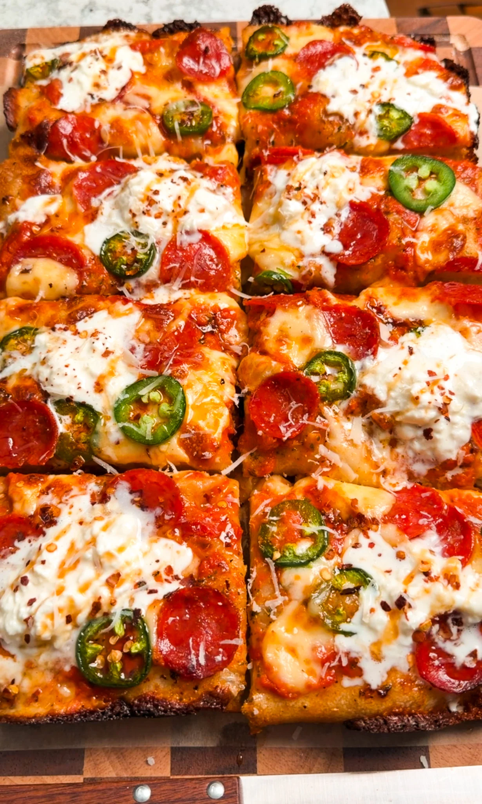
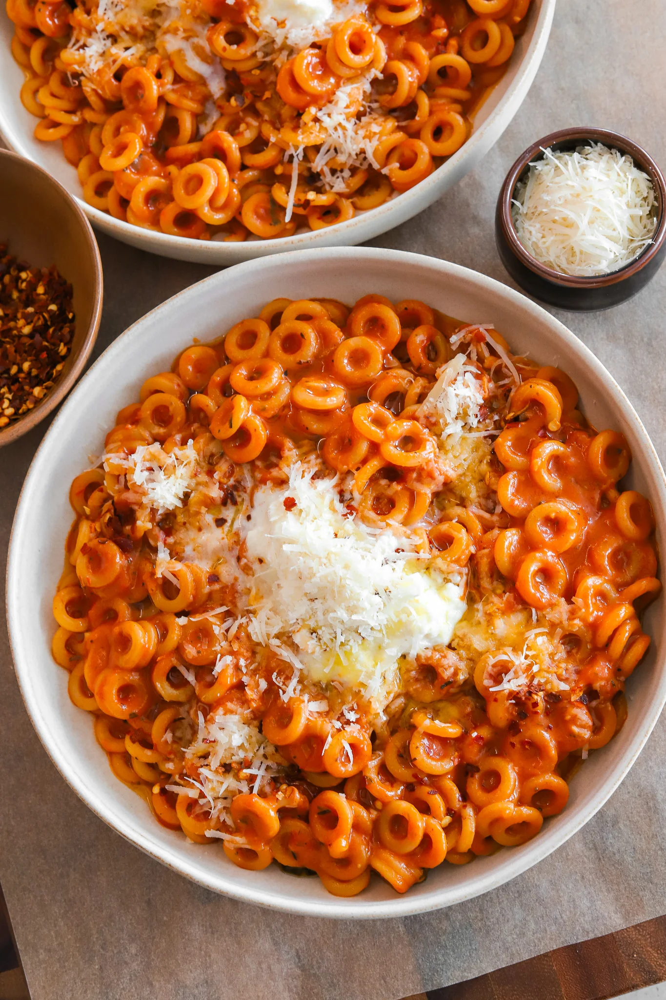

My Favorite Dishes
Detroit-Style Pizza

Ingredients
THE DOUGH
- 2 1/4 cups bread flour
- 1 teaspoon instant yeast
- 1 teaspoon granulated sugar
- 1 teaspoon diastatic malt powder, optional
- 1 to 1 1/4 cups lukewarm water
- 1 1/2 teaspoons salt
GARLIC BUTTER
- 1/4 cup unsalted butter, melted
- 1 teaspoon minced garlic
- 1 tablespoon chopped parsley
- 1/2 teaspoon dried oregano
- 2 tablespoons parmesan
- 1/2 teaspoon black pepper
- Pinch of salt
SAUCE
- 1/2 cup marinara sauce
- 2 tablespoons heavy cream
TOPPINGS
- Jalapeño slices
- Beef or turkey pepperoni
- 4 ounces low-moisture mozzarella, cut into tiny cubes
- 4 ounces Monterey Jack, cut into tiny cubes
- Stracciatella, the creamy burrata filling
- Hot honey
Instructions
PREPARE THE DOUGH
-
In a large bowl, combine bread flour, instant yeast, sugar, and
diastatic malt powder if using.
-
Add 1 cup lukewarm water and mix until the dough just comes
together. Kneading is not necessary. The dough should be
slightly sticky but not unmanageable. If it feels dry, add
more water 1 tablespoon at a time. You can also use a stand
mixer fitted with a hook attachment and mix just until
combined.
- Cover and let the dough rest for 20 to 30 minutes.
-
Sprinkle the salt over the dough. With slightly wet hands, pinch
and fold the dough repeatedly until the salt is fully
incorporated. Cover again and place in a warm spot. I like
keeping it in the oven turned off with just the oven light
on.
-
Perform 3 to 4 sets of stretch and folds every 30 minutes.
Lightly brush your hands with a little neutral oil to prevent
sticking. Grab one side of the dough, gently stretch it upward
without tearing, then fold it over itself. Rotate the bowl
and repeat on all four sides. Each set should take about 30
seconds. Cover and return it to the warm spot between each
set.
MAKE THE GARLIC BUTTER
-
In a small bowl, mix melted butter, minced garlic, parsley,
dried oregano, parmesan, black pepper, and a pinch of salt until
combined.
ASSEMBLY AND BAKING
- Grease your pan with 1 tablespoon neutral oil.
-
Transfer the dough directly into the pan after the final stretch
and fold. Gently press it toward the edges. If it resists, let
it rest 10 to 15 minutes and press again.
-
Let the dough proof in the pan for about 1 to 2 hours, until
doubled and very airy.
-
About halfway through the pan proof, optionally place a pizza
steel on the bottom rack of your oven and begin preheating to
500°F so it has a full 30 minutes to heat thoroughly.
-
Mix the marinara sauce and heavy cream together until smooth.
- Brush the top of the dough lightly with the garlic butter.
-
Spread the marinara cream sauce evenly over the dough. For a
more authentic Detroit-style option, you can instead add the
sauce on top of the cheese in stripes after the cheese is added.
-
Scatter the cubed mozzarella and Monterey Jack evenly over the
top, placing some cheese along the edges of the pan as well for
crispy corners.
- Add beef or turkey pepperoni and jalapeños.
-
Place the pan directly on the bottom rack or on the fully
preheated pizza steel if using. Bake for about 14 minutes, or
until the cheese is deeply golden and the edges are crisp and
caramelized.
-
Remove from the oven and carefully transfer the pizza out of the
pan onto a wire rack. Let cool slightly so the bottom stays
crisp.
-
Slice and top each piece with a spoonful of stracciatella and a
drizzle of hot honey. Enjoy warm.
Homemade Spaghetti O's

Ingredients
PASTA
- 12 ounces anellini pasta
- 1 tablespoon olive oil
- 2 tablespoons unsalted butter
- 1 tablespoon minced garlic
- 3 tablespoons tomato paste
- 3 ½ to 4 cups low sodium chicken broth
- 1 cup crushed tomatoes
- ⅓ cup heavy cream
- 1 teaspoon Italian seasoning
- 1 teaspoon paprika
- 1 teaspoon salt, or to taste
- ½ to 1 teaspoon red pepper flakes, to taste
- ½ teaspoon oregano
- ½ teaspoon black pepper
- 1 ½ teaspoons granulated sugar
- ½ cup grated parmesan cheese
- 3 to 4 fresh basil leaves, thinly chopped
Instructions
-
In a large pot over medium heat, melt the butter with the olive
oil. Once hot, add the garlic and sauté for about 1 minute until
fragrant.
-
Stir in the tomato paste and cook for 2 to 3 minutes until it
darkens in color and smells rich and concentrated.
-
Pour in the chicken broth, crushed tomatoes, and heavy cream.
Stir until everything is well combined.
-
Add the Italian seasoning, red pepper flakes, oregano, paprika,
salt, pepper, sugar, and chiffonaded basil. Stir everything
together.
-
Stir in the dry anellini pasta and bring the pot to a boil. Once
boiling, reduce the heat to medium-low and let it simmer
uncovered for about 12 to 15 minutes, stirring often so the
pasta doesn’t stick, until the pasta is tender and the sauce is
slightly thickened. If the pasta needs more time to cook and has
thickened too much, add more broth as needed – I used the full
4 cups.
-
Once the pasta is cooked through and the sauce has thickened,
stir in the parmesan cheese until it melts into the sauce and
everything is creamy.
-
Spoon into bowls and top with a drizzle of olive oil, a dollop
of burrata, and more parmesan if you’d like.
Homemade Spaghetti O's
Ingredients
CORNMEAL BATTER
- 1 cup all-purpose flour
- 3/4 cup yellow cornmeal
- 2 tablespoons granulated white sugar
- 1 1/2 teaspoons baking powder
- 1/2 teaspoon baking soda
- 3/4 teaspoon salt
- 1 large egg
- 1 tablespoon honey
- 2 tablespoons unsalted butter, melted
- 1 cup buttermilk, cold
CORN DOGS
- 6 all-beef hot dogs
- Neutral oil, for frying
Instructions
- Pat the hot dogs dry with a paper towel.
-
Insert a skewer or wooden stick into each hot dog lengthwise,
leaving enough to hold onto.
-
If using the optional coating, mix the cornstarch and flour
together on a small tray — you want it long enough to fit the
whole hot dog. Roll each one in the mixture and shake off any
excess. This helps the batter stick.
-
In a large bowl, whisk together the flour, cornmeal, sugar,
baking powder, baking soda, and salt.
-
Add the egg, honey, and cold buttermilk and stir until just
combined.
- Stir in the melted butter.
-
Pour the batter into a tall glass or jar for easy dipping. Let
it rest for 5 minutes.
-
Heat neutral oil in a deep pot to 325°F. You want enough oil to
fully submerge the corn dogs. If the oil is too hot, the outside
will brown before the batter is cooked through in the center.
-
Working one at a time, dip a hot dog into the batter by the
stick. While still holding the stick, submerge it in the oil and
hold it there for about 10 seconds until the batter firms up,
then release. This prevents it from sinking to the bottom and
losing its coating. You can also use tongs to help lower it in
if the hot oil feels a little scary.
-
Fry for 3 to 4 minutes, turning occasionally, until deep golden
brown all over.
- Remove with tongs and drain on a wire rack.
-
Repeat with remaining corn dogs, making sure the oil comes back
to 325°F between batches.
- Serve immediately with ketchup and mustard on the side.